Mobile Malware Analysis : Dissecting Hydra
Hydra
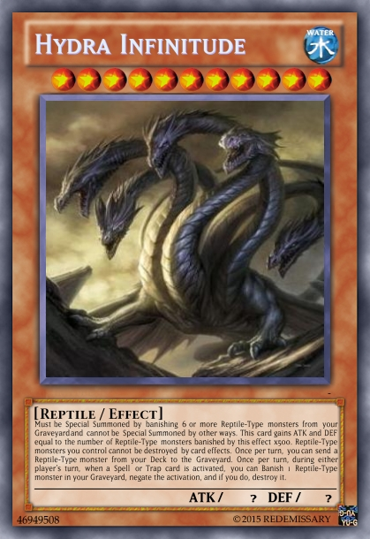
Hydra is another bankbot variant. It uses overlay to steal information like Anubis. It’s name comes from command and control panel. Through July 2018 to March 2019 there was 8-10 sample on Google Play Store. Distrubition of malware is similar to Anubis cases. Downloader apps are uploaded to Play Store. But unlike Anubis, Downloader apps extract code from png files with
Table of contents:
- Time check
- GDB Debug
- Ghidra shenanigans
- Drop dex file
- Dropped APK
First of all if I run apk on my emulator it doesnt drop dex file.
Time Check
When we open first app with jadx we can see time check in class com.taxationtex.giristexation.qes.Hdvhepuwy.
1 | public static boolean j() { |
This function called in another class : com.taxationtex.giristexation.qes.Sctdsqres
1 | class Sctdsqres { |
First it checks time and if condition holds, app will load native library and calls fyndmmn(Hdvhepuwy.j()); which is native function. We need to bypass this check and app will always load library.
I used apktool to disassemble apk to smali and changed j() to always return true.
apktool d com.taxationtex.giristexation.apkcd com.taxationtex.giristexation/smali/com/taxationtex/giristexation/qesedit j()Z in Hdvhepuwy.smali
1 | .method public static j()Z |
rebuild apk with apktool b com.taxationtex.giristexation -o hydra_time.apk and sign it.
Now time control will always return true and after loading native library, fyndmmn native function is called. Even with this still app doesn’t load dex file.
GDB Debug
Here is great post explaining how to setup gdb to debug native libraries. Steps:
- Download android sdk with ndk
- adb push ~/android-sdk-linux/ndk-bundle/prebuilt/android-arm/gdbserver/gdbserver /data/local/tmp`
- adb shell “chmod 777 /data/local/tmp/gdbserver”
- adb shell “ls -l /data/local/tmp/gdbserver”
- get process id, ps -A | grep com.tax
- /data/local/tmp/gdbserver :1337 –attach $pid
- adb forward tcp:1337 tcp:1337
- open up gdb
- target remote :1337
- b Java_com_tax\TAB
There is small problem here. App will load library and call native function and exit. App needs to wait for gdb connection. My first thought was putting sleep function and then connect with gdb.
- apktool d hydra_time.apk
- nvim hydra_time/com.taxationtex.giristexation/smali/com/taxationtex/giristexation/qes/Sctdsqres.smali
Add1
2const-wide/32 v0, 0xea60
invoke-static {v0, v1}, Landroid/os/SystemClock;->sleep(J)V
after following block:1
2.line 43
:cond_0
and since locals is 1 and we use extra v1 variable, increment it to 21
2.method static H()V
.locals 2
Again sign and install the app. If all goes well app will wait 60 seconds in whitescreen. Now we can connect with gdb.
1 | ps | grep com.tax |
I use pwndbg for better gdb experience, you can try peda or whatever you want.
- adb forward tcp:1337 tcp:1337
- gdb
- target remote :1337
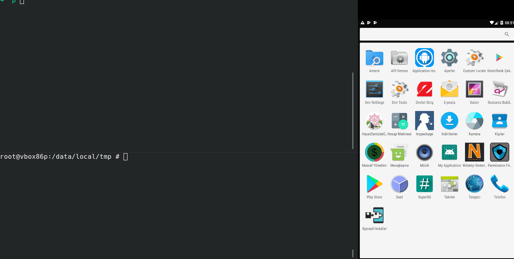
It takes time to load all libraries from remote. Then put breakpoint to native function
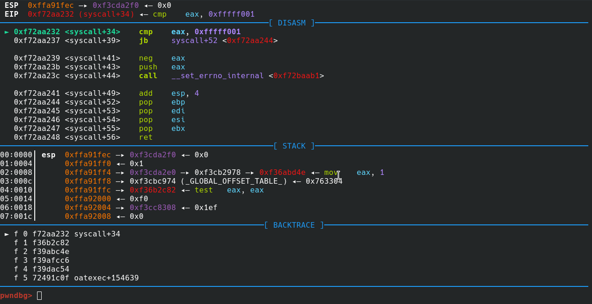
Since genymotion is x86 i will use lib/x86/libhoter.so file. We will use ghidra to see decompiled codes.
First of all if you want to sync gdb and ghidra addresses,
Type vmmap at gdb and look for first entry of libhoter.so.
0xe73be000 0xe73fc000 r-xp 3e000 0 /data/app/com.taxationtex.giristexation-1/lib/x86/libhoter.so
So 0xe73be000 is my base address.
Go to Window -> Memory Map and press Home icon on upper right. Put your base address and rebase binary.
Lets look at entry of native function
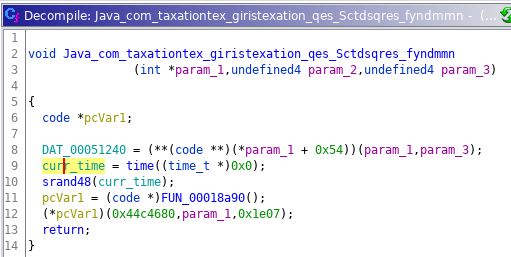
Why call time ? Again time check ? Rename return value of time function (curr_time) and press ctrl+shift+f from assembly view and go to location that context is READ.
1 | return (uint)(curr_time + 0xa3651a74U < 0xd2f00) |
So we were right, time check.. Lets calculate
1 | >>> 0xffffffff-0xa3651a74+0xd2f00 |
convert epoch to time : Saturday, April 6, 2019 2:52:59 AM
Lets check how this boolean is used. Look for xrefs of check_time function.
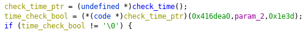
Yep, as we think it will exit if time doesn’t hold.
First breakpoint/binary patch point is here. Or we can change emulator/phone’s time to April 5 2019.
b *(base + 0x8ba8)
Bypassing time check is not enough.
Ghidra Shenanigans
Now diving into binary file you will find functions like this :
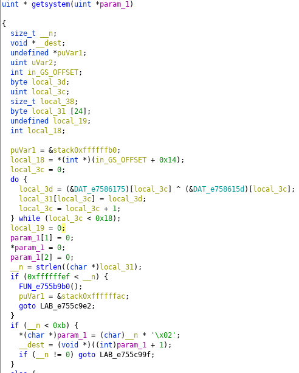
If you look at while loop.
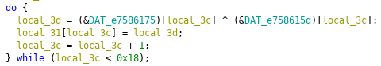
2 blocks of data are xored with the length 0x18. We can put breakpoint after do while but it will not be efficent solution. Lets think a programmatic way to find decrypted strings.
These xor blocks are next to each other. If we can find get length of blocks we can easily get decrypted string. Find function that use these xor blocks and rename it. Then we can jump 2*length and get next xor blocks.
Starting xor block is 0x34035.
Get xrefs of block,
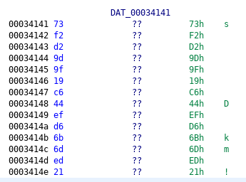
go to function,
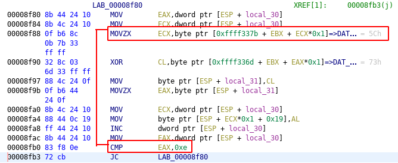
get size from CMP instruction, since we know first xor block add size to address of xor block and get second xor block. Decrypt it and rename the function.
Ghidra : go to Window -> Script Manager -> Create New Script -> Python.
Set name for script and lets write our ghidra script.
1 | import ghidra.app.script.GhidraScript |
If you want to run script, select created script in Script Manager and press Run.
Now lets look at the output.
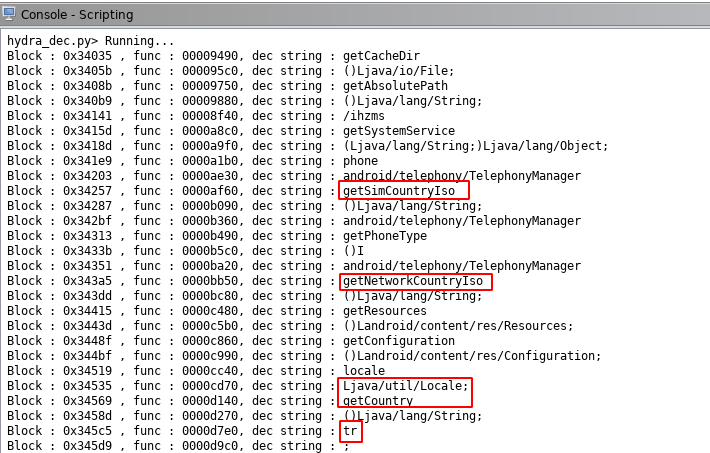
As you can see there are functions : getSimCountryISO, getNetworkCountryIso, getCountry and one suspicious string : tr. Without running we can assume code will check if these functions return values are equals to tr. I know this app targets Turkish people so this is reasonable to avoid sandbox and even manual analyze.
If you follow from these functions’ xrefs to function FUN_00018A90() (called after time check) you can see this block :

So next patch/breakpoint is this check :
b *(base + 0x8c80)
After these checks code will drop dex and load it. If you run without patch/breakpoints only edevlet page is shown and nothing happens. Lets try with bypassing checks :
first breakpont :
1 | b *(base + 0x8ba8) |
1 | b *(base + 0x8c80) |
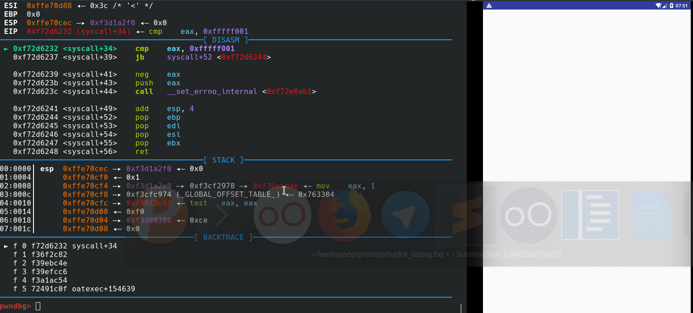
Or we can patch je instructions to jne.
Drop Dex
If you look for dropped file in filesystem, you won’t see anything. File is removed with unlink. We can attach frida and catch dropped file easily. But forget about it and lets find how png file is used to create dex file.
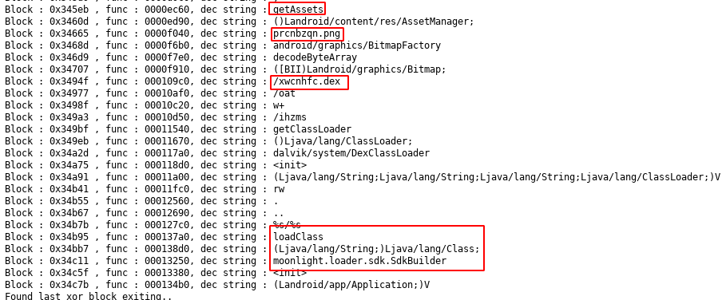